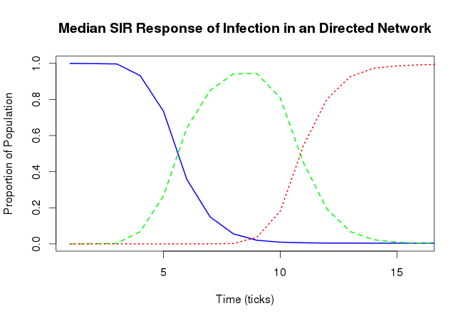
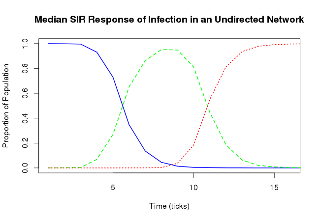
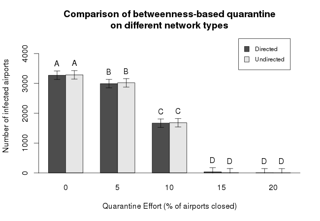

Using python and NetworkX, a network consisting of airports as nodes and airline routes as edges was constructed with data from openflights.org as shown in Figure 1. Nodes without inbound edges were removed. Documentation on this simulator is provided in pydoc form.
Here are some figures of merit
Two models were created for the investigation of flu-dynamics in air travel, namely a "simple model" and a complex model. The simple model has 4 rules:
Propagation of the infection accross the network can be seen in the video below
An example SIR plot of this model looks as follows

The complex model follows 6 rules:
This model's SIR plot is as follows


From this, we found that an infection through our network required around three ticks to have a noticable amount of infections. We also found that the infection peaks around the nine tick mark, and fully disapates in 15 ticks. We then decided to test if there was a difference in out network if it behaved as a directed network or a undirected network. Using the method described above, we constructed a median SIR plot for the undireced network.
As you can see, the two plots are nearly identical, suggesting that due to the reciprical routes of the network, the directed network behaves similarly to undirected form of the network. We decided to test this idea further by running a series of quaratine efforts based on betweenness centrality for both the directed and undirected networks, and performed an ANOVA test on the data collected.
Treatment
Df
Sum Sq
Mean Sq
F value
Pr(F)
Network Type
1
88498
88498
0.274
0.601
Effort
4
813674670
203418668
628.963
2e-16 ***
Network Type : Effort
4
264482
66121
0.204
0.936
Residuals
490
158475453
323419
Signif. codes: 0 ‘***’ 0.001 ‘**’ 0.01 ‘*’ 0.05 ‘.’ 0.1 ‘ ’ 1
This ANOVA was then used in a Tukey HSD and we found that there is no
statistical difference between a directed and undirected network.

Using the directed network, we then tested three quarantine strategies: quarantining randomly, in decending degree, and in order of decending betweenness centrality. We used the collected data in an ANOVA test, and found significance in effort, quarantine type, and the interactions of both effort and quarantine type. We found the greatest gains with a 5% quarantine effort of the airports with the highest betweenness centrality
Treatment
Df
Sum Sq
Mean Sq
F value
Pr(F)
Effort
4
675706897
168926724
556.17
2e-16 ***
Quarantine Type
2
276498032
138249016
455.17
2e-16 ***
Network Type : Effort
8
181062773
22632847
74.52
2e-16 ***
Residuals
735
223244112
303733
Signif. codes: 0 ‘***’ 0.001 ‘**’ 0.01 ‘*’ 0.05 ‘.’ 0.1 ‘ ’ 1
We used the ANOVA data and performed a Tukey HSD (Honest Significant Dfference)
test, the results of which can be found below.